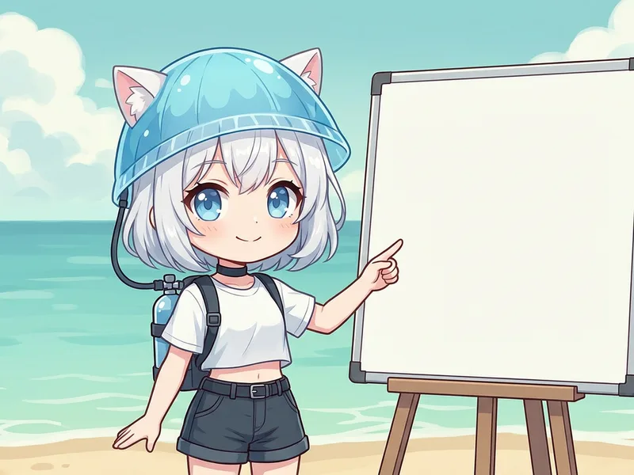
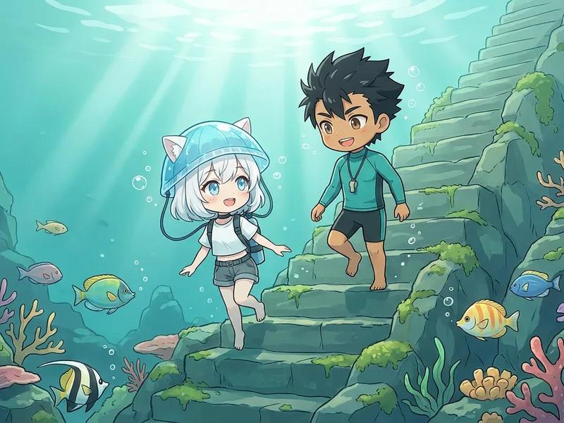

初心者向けライセンス講習の料金・日数
まずは「いくらかかるか」「何日必要か」「別途必要なもの」を確認できるようにしました。分からない点は申し込み前にLINEで相談できます。

体験ダイビング
ライセンス不要。まず海の中を体験したい方向け。
¥19,800
4〜5時間 / 基本練習＋海1ダイブ
OWD（Cカード取得）
ダイビングを趣味として続けたい初心者向け。
¥53,900
実技2〜3日間 / 別途レンタル器材 ¥5,500/日
横須賀方面から日帰り、横浜方面から週末、東京近郊から小旅行感覚で参加できます。京急線「三崎口駅」からの送迎や集合場所は予約時にご相談ください。
PADIダイビングライセンス 開講コース一覧
初心者ダイバーからステップアップ希望の方まで、目的に合わせて選べます。初めての方は、まず体験ダイビングまたはOWDをご覧ください。

体験ダイビング
オープンウォーターダイバー（OWD・Cカード取得）
世界中で通用する入門ライセンス。eラーニング、基本練習、海洋実習を通して一つずつ学びます。
※別途: レンタル器材代 ¥5,500/日（2日間=¥11,000〜）
アドバンス講習（AOW・アドバンスダイバー）
5ダイブ（3ビーチ＋2ボート）でスキル拡張。ディープ・ナビゲーションが必須、残り3本は中性浮力やナチュラリストなどから選べます。
※別途: レンタル器材代 ¥5,500/日（2日間=¥11,000）
EFR（救急法）
レスキューダイバー
自己救助・他者救助スキルを学ぶ安全コース。プロレベルの手前の重要なステップ。
前提: AOW＋EFR修了
※別途: レンタル器材代・ポケットマスク（¥4,000）


お友達のご紹介で、OWD・AOWの器材レンタルが1日分無料
受講されるお友達は¥5,500（税込）分おトク。紹介してくださった認定ダイバーの方は、付き添いダイビングが¥6,600引き（ビーチは半額の¥6,600／ボート¥13,200）になります。
お友達と2人同時のお申し込みも歓迎です（お二人とも特典が適用されます）。
スペシャルティコース
興味のある分野を深掘り。5つ取得でマスタースクーバダイバーに！
PPB（中性浮力）
ドライスーツ
ボートダイバー
魚の見分け方
デジタルフォト
ナビゲーション
ディープダイバー
ナチュラリスト
サーチ&リカバリー
ナイトダイバー
ドリフトダイバー
※料金はすべて税込です。レンタル器材が必要な方は、別途レンタル器材代 ¥5,500/日 が必要です。
プロフェッショナルコース
ダイビングを仕事にしたい方へ。経験や目標に合わせてご相談ください。
ダイブマスター
AI（アシスタントインストラクター）
OWSI
IDC（インストラクター開発コース）
EFRI
IDCスタッフインストラクター
三浦 海の学校が選ばれる理由
初めての方にも、一人ひとりのペースに合わせてご案内します。
講習を中心に、1997年から
オーストラリアでプロ資格を取得して以来、初心者のライセンス講習を中心に活動してきました。
三浦の海を約14年
城ヶ島や宮川湾など、季節や海況に合った三浦の海で講習を行います。
横浜・横須賀から日帰り
京急線・三崎口駅が最寄り。送迎や集合場所は、ご予約時にご相談いただけます。
少人数制・幅広い年齢に対応
少人数制。10歳から参加OK。シニアの方やお一人での参加も大歓迎です。
お住まいの地域別のご案内：
神奈川でライセンスを検討中の方 →
横須賀方面から →
ライセンス取得の流れ（OWDの場合）
事前のeラーニング＋実技2〜3日間が目安です。海況や習熟度に合わせて無理なく進めます。
eラーニング（学科講習）
PC・スマホで自分のペースで学習。ダイビングの基礎知識を身につけます。
限定水域練習＋海洋実習 1から2ダイブ
器材の使い方や水中での呼吸など、基本スキルを一つずつプールやプールと同等環境で練習してから海で実践します。
海洋実習 2から3ダイブ
海洋実習で安全にダイビングを楽しむためのスキル取得を進めます。前日より自信をもって海中を楽しめます。
海洋実習完了 → 認定！
必要な海洋実習とスキル確認を終えたら、PADIオープンウォーターダイバー認定です。海況や進み具合により3日間でご案内する場合もあります。
受講者の声
泳ぎが苦手で不安でしたが、基本から一つずつ教えてもらい、海でも落ち着いて潜れました。少人数なので質問もしやすく、講習があっという間でした。
60歳を過ぎてからの挑戦でしたが、自分のペースに合わせてもらえて楽しめました。今ではファンダイビングにも通っています。
一人で参加しましたが、すぐに打ち解けられました。品川から1時間で着くのでアクセスも楽。OWD取得後すぐにAOWも受講し、30mの世界を楽しんでいます。
コース選び・お申し込みのよくある質問
どのコースから始めればいいですか？
泳げなくてもライセンス講習は受けられますか？
レンタル器材や追加費用はありますか？
横須賀・横浜・東京近郊から日帰りで通えますか？
申し込み前にLINEで相談できますか？
OWDとAOWの違いは何ですか？
神奈川・三浦でダイビングライセンス取得の相談
コース選び、費用、日程、泳げない不安、一人参加の心配も、申し込み前にLINEで相談できます。
神奈川・三浦半島でダイビングライセンス（Cカード）を取得するなら
三浦 海の学校では、神奈川県三浦市・三浦半島でスクーバダイビング（スキューバダイビング）のCカード（ダイビングライセンス）取得講習を開催しています。1997年から講習を中心に活動してきたインストラクターが、少人数で基本からご案内します。
PADIオープンウォーターダイバー（OWD）のCカード取得を中心に、アドバンス講習（アドバンスドオープンウォーターダイバー・AOW）やレスキューダイバーなど、経験や目標に合わせたステップアップ講習をご案内しています。初心者の方はもちろん、久しぶりに学び直したい方も、一人ひとりのペースに合わせて進めます。
京急線・三崎口駅が最寄りで、横須賀方面から日帰り、横浜方面から週末、東京近郊から小旅行感覚で参加できます。神奈川県内でスクールを比較している方は、 神奈川でダイビングライセンスを取る前の選び方もご覧ください。